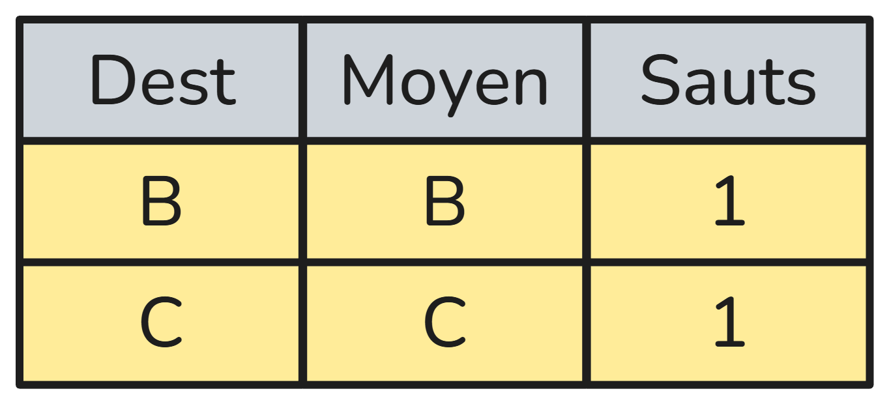
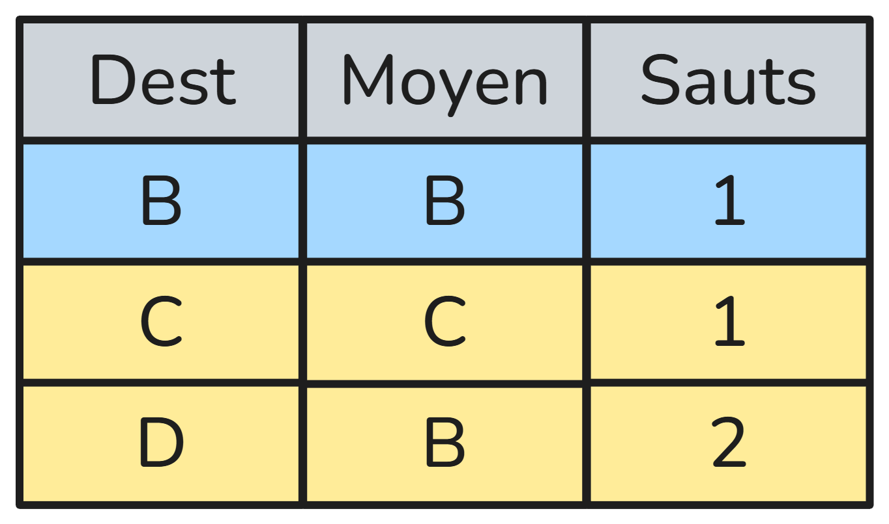
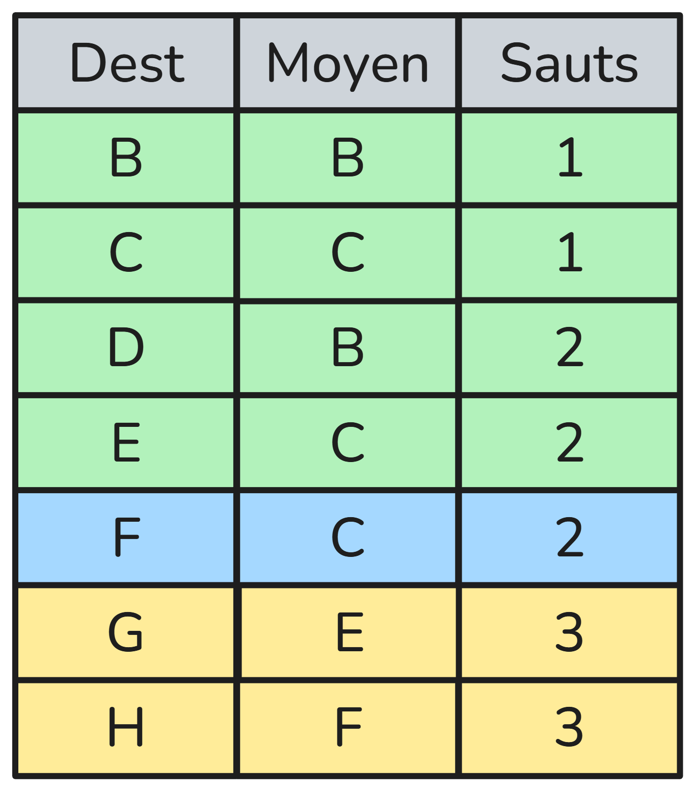
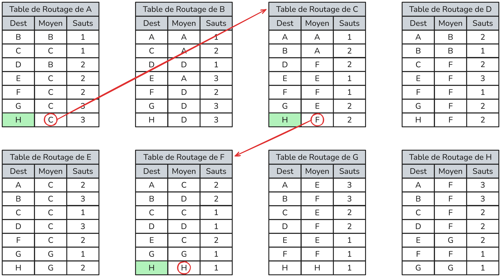
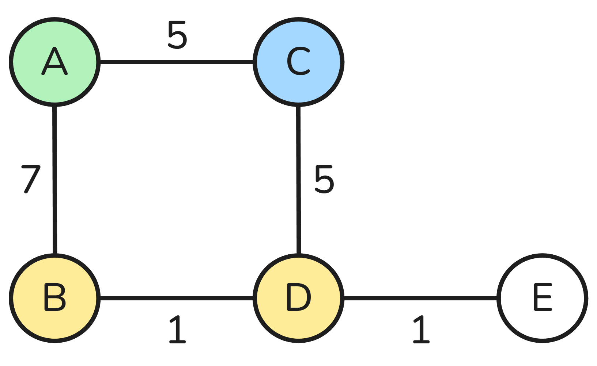
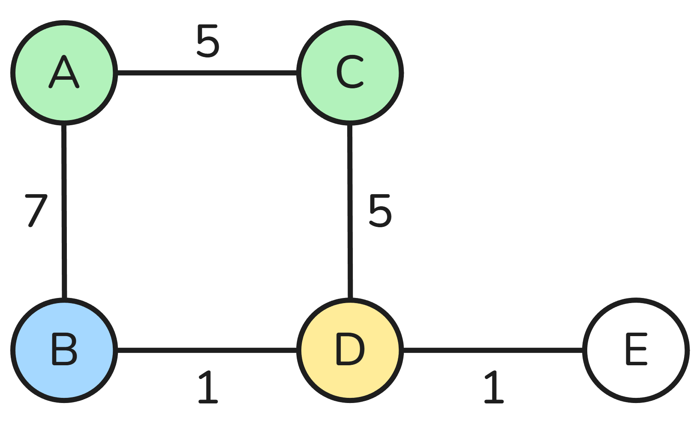
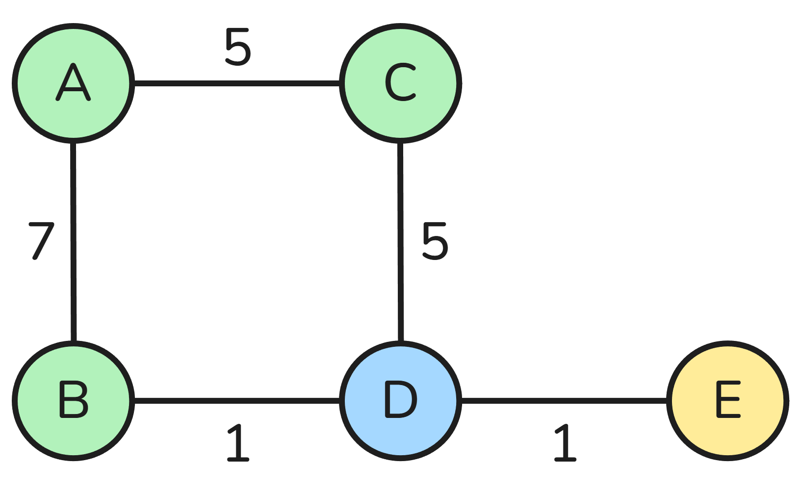
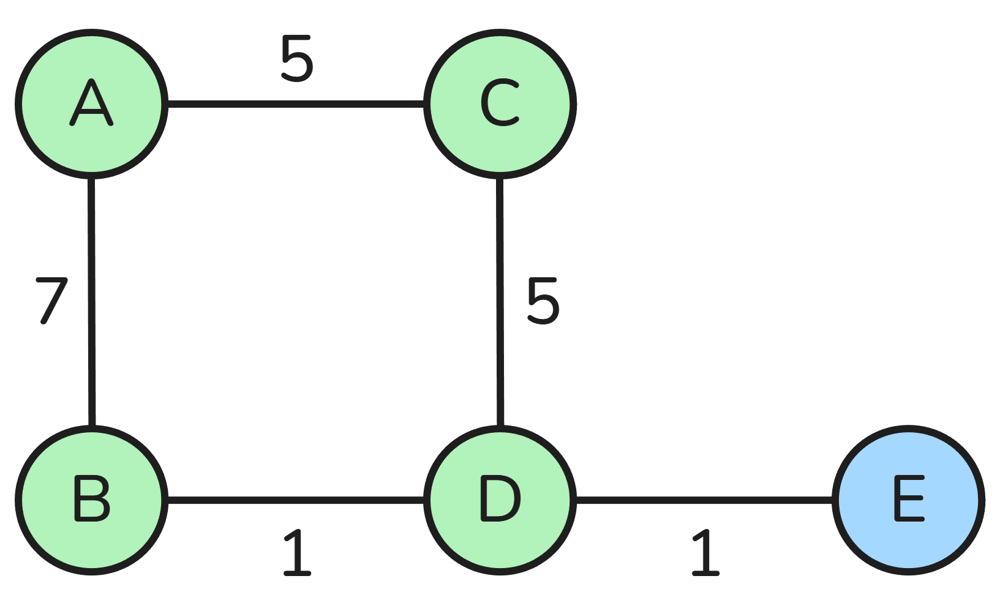

Algorithmes de routage
Ce chapitre est une courte extension du chapitre de première sur les réseaux
Rappel : qu'est-ce que le routage ?
Sur Internet, les données sont découpées en paquets. Chaque paquet doit être acheminé depuis un ordinateur source vers un ordinateur destination, en passant par plusieurs routeurs intermédiaires.
Le routage correspond au choix du chemin suivi par les paquets dans un réseau.
Chaque routeur prend une décision locale : vers quel routeur voisin envoyer le paquet ensuite ?
Modélisation d'un réseau
Pour étudier le routage, on modélise souvent un réseau sous la forme d’un graphe.
- Les sommets représentent les routeurs
- Les arêtes représentent les liaisons entre routeurs

Le routage revient donc à un problème de recherche de chemin dans un graphe.
Protocole RIP (Routing Information Protocol)
Principe
Le protocole RIP (Routing Information Protocol) est un protocole de routage basé sur l’algorithme de Bellman-Ford.
- Les routeurs échangent leur table de routage toutes les 30 secondes
- Chaque routeur envoie sa table à ses voisins directs
- La métrique utilisée est le nombre de sauts (hops)
Un saut correspond à un lien entre deux routeurs.
Chaque routeur met à jour sa table en ne conservant, pour chaque destination, que le chemin avec le plus petit nombre de sauts.
- Au départ, un routeur ne connaît que ses voisins
- Progressivement, les tables s’enrichissent
- Le réseau converge vers un état stable
Exemple
Remplissons la table de routage de A :
| Graphe | Table | Description |
|---|---|---|
 |
 | On part de A, connecté à B et C. |
 |
 | On continue avec B. |
 |
 |
Puis C. |
 |
 |
On a deja vu F. |
 |
 |
|
 |
 | Fini ! |
On pourrait continuer, mais on voit bien qu'on a deja exploré tout le graphe. On ne trouvera pas de chemin plus court pour G et H.
Pour trouver le plus court chemin vers un routeur en partant de A, on va utiliser notre table de routage.
Par exemple pour atteindre le routeur H :

Le plus court chemin de A vers H est : A -> C -> F -> H.
Exercice
Trouver le plus court chemin de A vers H en utilisant l'algorithme du protocole RIP.

Limites
Le protocole RIP limite le nombre de sauts à 15 :
- jusqu'à 15 sauts : destination atteignable
- à partir de 16 sauts : destination injoignable
RIP est un protocole simple, mais il ne prend pas en compte la qualité des liens.
Protocole OSPF (Open Shortest Path First)
Le protocole OSPF est un protocole de routage plus récent que RIP, conçu pour corriger ses limitations.
Il est largement utilisé sur Internet.
OSPF est basé sur l’algorithme de Dijkstra, qui permet de déterminer le chemin de coût minimal.
- Les routeurs échangent des informations avec leurs voisins
- Chaque routeur conserve ces informations en mémoire
- Il calcule ensuite les meilleures routes à l’aide de l’algorithme de Dijkstra
Contrairement à RIP, les routeurs ont une vision plus globale du réseau.
La métrique utilisée
Avec OSPF, la métrique n’est pas le nombre de sauts, mais un coût :
- Le coût dépend de la qualité de la liaison
- En pratique, il est lié au débit de la connexion
- Le coût total d’un chemin est la somme des coûts des liaisons
OSPF choisit donc le chemin le plus rapide, pas forcément le plus court en nombre de routeurs.
Par exemple, on pourrait representer un réseau (avec les débits des liaisons) comme ceci :

L'algorithme de Dikstra
| Graphe | Table | Description |
|---|---|---|
 |
 |
On part de A. |
|  |  |
Le plus court chemin part vers C. |
|  |  |
On remplace chemin vers D. |
|  |  |
|
|  |  |
Fini! |
On peut alors retrouver la table de routage de A :
| Destination | Moyen | Coût |
|---|---|---|
| B | B | 7 |
| C | C | 5 |
| D | B | 8 |
| E | D | 9 |
Exercices
1) Rapeler les combiens il y a de bits dans un kb, un Mb et un Gb (avec des puissaces de 10).
Pour calculer le coût d'une liaison, par convention, on utilisera la formule suivante :
\(coût = 10^8 / débit\).
2) Modifier le graphe précedent en raplaçant les débits par les coûts des liaisons.
3) Appliquer l'algorithmes de Dijkstra pour faire la table de routage de A.
4) Comparer avec celle trouvée pour le protocole RIP. Expliquer les changements.
Avantages
- Prend en compte la qualité des liens
- Adapté aux grands réseaux
- Les tables de routage ne sont recalculées que lorsqu'un changement de topologie est observé.
Lien avec les algorithmes de graphes
Le routage est une application directe des algorithmes de recherche de chemin du chapitre sur les graphes que l'on verra plus tard dans l'année.
| Protocole | Type de graphe | Algorithme associé |
|---|---|---|
| RIP | Graphe non pondéré | Parcours en largeur (BFS) |
| OSPF | Graphe pondéré | Algorithme de Dijkstra |
Les protocoles de routage sont des applications concrètes des algorithmes de graphes.